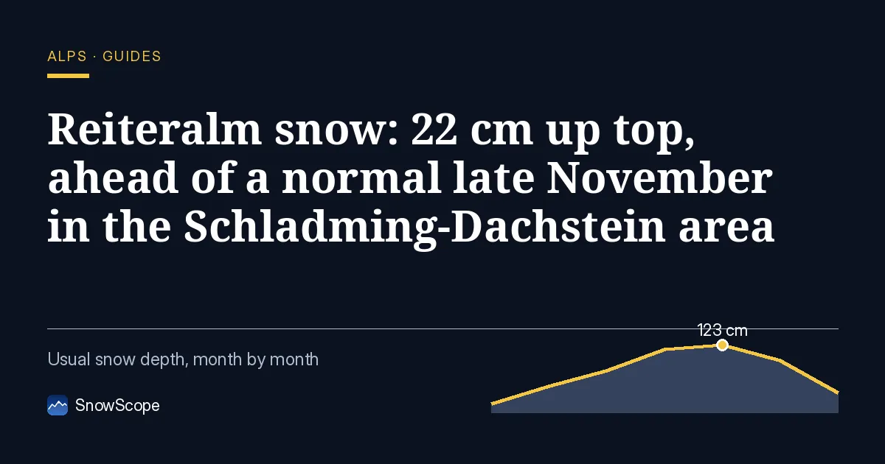
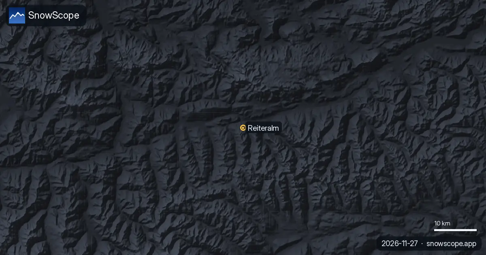

Reiteralm snow: 22 cm up top, ahead of a normal late November in the Schladming-Dachstein area
Reiteralm has 22 cm of snow on its upper slopes on 27 November 2026, after 12 cm fell on Thursday. At 1,314 m, the middle of the ski area, the snowpack is 11 cm, just under the 12 cm that is normal for the date, so the area is on track for its usual early-December start.
See the live snow forecast for Reiteralm in the SnowScope appSnow depth, powder alerts and the 3D map, free.

Snow report
Upper slopes: 22 cm. New snow: 13 cm in three days, 20 cm in seven. Forecast: dry and cold to Monday 30 November, very little in the following week. The lifts run from 771 m in the Enns valley to 1,858 m at the top, a vertical of more than a thousand metres for a resort many visitors have never heard of.
With cold nights the snowmaking can run around the clock, and Reiteralm traditionally opens its upper slopes early for race teams before the public season.
What a normal December looks like
At 1,314 m the usual depth is 22 cm on 8 December, 26 cm on 15 December and 33 cm on Christmas Day. A 30 cm natural base usually arrives in early December, and a 50 cm base by New Year was reached in 26% of 46 winters.
Those are modest numbers, and they explain why the area, like its neighbours in Ski amadé, relies on snowmaking for the first weeks of the season. The leanest winter on record was the last one, 2025-26, peaking at 46 cm; the best was 1986-87, at 109 cm.
Why skiers choose Reiteralm
Reiteralm sits between the big names of the Schladming-Dachstein region, Planai and Hochwurzen, and is part of the same lift pass. It is quieter, with wide red and blue runs through the forest and a good view of the Dachstein glacier.
Families like it for exactly that reason: fewer crowds at the lifts, short walks from the car parks and a children's area at the base. Racers know it as an early-season training hill.
Christmas and New Year
For the holidays the natural snow is usually enough on the upper slopes, and snowmaking covers the rest. Snow lay on the ground at 1,314 m on Christmas Day in 100% of winters. The lower runs into the valley are the part most exposed to a warm spell, which is common in the Enns valley in late December.
Follow the snow at the base, mid-mountain and top every day on the Reiteralm snow page.
Quick answers
Is Reiteralm open in early December? Its upper slopes usually open early for training groups and then for the public as soon as the snowmaking has built the base; this year's natural snow helps.
How does it compare with Planai? Planai is bigger and busier and its slopes come right down into Schladming; Reiteralm is calmer, with more space on the pistes. The same lift pass covers both.
When is the snow best? Late January to early March: the usual depth at 1,314 m peaks around 59 cm in February.
Is there anything for non-skiers? Schladming is ten minutes away, with its town centre and the Dachstein glacier excursion on clear days.
Getting there
Reiteralm is near Pichl, a few minutes west of Schladming, and is easy to reach by train to Schladming and ski bus, or by car from Salzburg in about an hour and a quarter. Parking at the base is simpler than at the main Schladming lifts on busy weekends.
Tips for skiers
- Choose Reiteralm on Ski amadé weekends: it is usually the quietest area of the Schladming-Dachstein pass.
- In early December, ski the upper slopes and take the gondola down if the valley run is thin.
- Book the week before Christmas for the lowest prices in the region.
- Compare with the rest of the Alps on the Alps snow hub and plan dates with the trip planner.
About these numbers
Snow numbers: SnowScope's snow map and forecast for today, and our record of 46 past winters at each resort (an estimate for the area, not the resort's own report).
Official avalanche bulletins: Lawinenwarndienst Steiermark
Cite this report
For research, teaching or the press: the numbers and charts are free to reuse under CC BY 4.0 with this citation.
SnowScope (2026), Reiteralm snow: 22 cm up top, ahead of a normal late November in the Schladming-Dachstein area, https://snowscope.app/blog/en/2026/11/reiteralm-ski-resort-snow-late-november-2026-schladming-family-area.html, accessed 2026-11-27
SnowScope (Atlas Labs). (2026, November 27). Reiteralm snow: 22 cm up top, ahead of a normal late November in the Schladming-Dachstein area. SnowScope snow reports. https://snowscope.app/blog/en/2026/11/reiteralm-ski-resort-snow-late-november-2026-schladming-family-area.html
BibTeX
@misc{snowscope2026reiteralmskiresortsnowla,
author = {{SnowScope (Atlas Labs)}},
title = {Reiteralm snow: 22 cm up top, ahead of a normal late November in the Schladming-Dachstein area},
year = {2026},
month = nov,
howpublished = {\url{https://snowscope.app/blog/en/2026/11/reiteralm-ski-resort-snow-late-november-2026-schladming-family-area.html}},
note = {Published 2026-11-27 23:57 UTC; accessed 2026-11-27}
}· CC BY 4.0 · Methods, data and tools →
Reiteralm: snow and temperature by height, this winter vs last (tools) →
Follow Reiteralm
Free: a message when fresh snow is coming, and the forecast every morning.